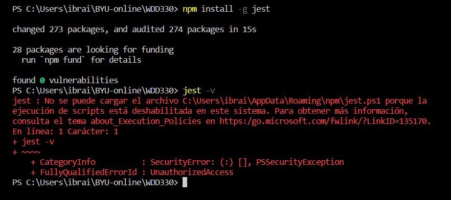
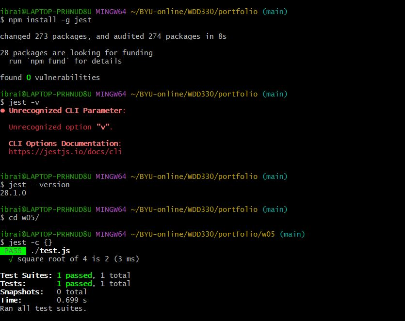

When I tried to see the version of the jest framework, these red letters appeared, but I saw another documentation that said that I needed to put "--version" not "-v" so it worked, when I was testing the function it didn't work, but instead of use the terminal of vs code I used git bash and that's how it worked (second image)
 